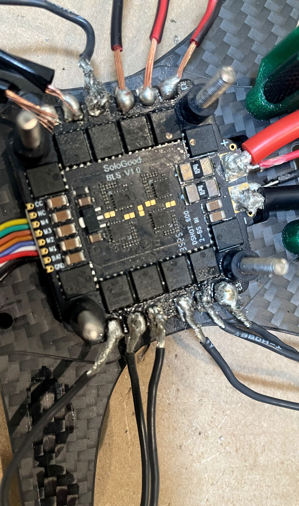
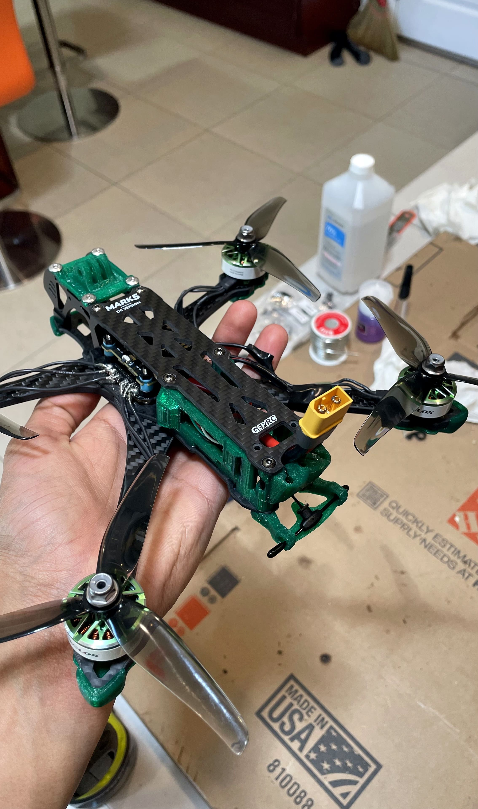

Personal
5" Freestyle FPV Drone

Overview
Over the summer, my friend and I decided to build a drone. We are both studying aerospace engineering so we thought it would be a fun time, and I especially wanted to build a drone because the CU Rover Team needed a drone for the competition, so I was killing two birds with one plane.
My Contribution
We did our research, and bought the carbon fiber body and motors, ESC, and we used a transmitter and reciever that my friend already owned. I printed auxiliary parts with my 3D printer, mainly out of TPU. The main process was assembly, which was a lot of screws and a lot of soldering.


Results
The drone flew pretty well. It was kind of a small project, but I was glad to get more experience putting stuff together and especially soldering. I also learned a lot about how drones are put together in the process.